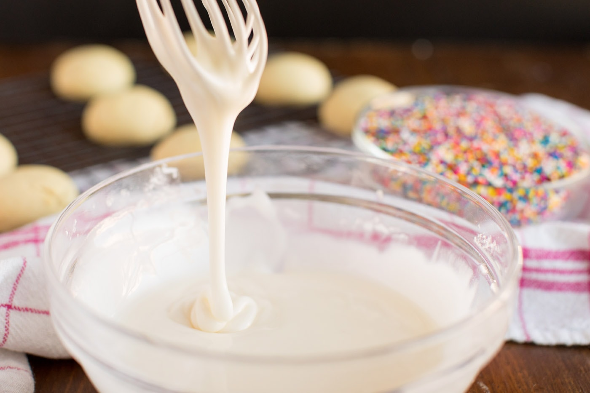

Italian Anisette Cookies
By Amanda Davis
November 26, 2020
Updated November 5, 2022

These anisette cookies will have all your guests swooning. These classic Italian goodies are a holiday favorite, make a batch for your next gathering!
Cook Time 10 min.
Total Time 25 min.
JUMP TO RECIPE
These anise cookies, also called Italian Anisette Cookies, are a holiday dessert favorite, just like my Thumbprint Cookies that everyone goes crazy over.
Why we love this recipe
Whether you choose to make these cookies with anise or without, they always seem to be a crowd-pleaser. Since this recipe makes a lot of cookies, they also make the perfect treats to bring along to a holiday gathering or family get-together.
I’m British, so naturally, I love the licorice flavor in Italian anisette cookies. You can certainly replace the anise extract in this recipe with lemon or vanilla extract if you have people who love the texture of these cookies, but not the licorice flavor. They will taste delicious either way, I promise!
Ingredients you need
This recipe is a little different than most cookies in that you will melt the butter. I promise it works!
Get all measurements, ingredients, and instructions at the end of this post.
How to make Italian anisette cookies
These step by step photos and instructions are here to help you visualize how to make this recipe.
For cookies:
- Melt butter and shortening together. Add the sugar; mix well.
- Add the eggs, one at a time, beating well after each addition. Mix in the anise extract.
- Sift or whisk together flour, baking powder, and salt.
- Add to creamed mixture gradually. If the dough is too sticky to roll in the palm of your hand, add flour until firmer, but it should be very soft.
- Roll dough into small balls, about 1/2 tablespoon each, and place on ungreased cookie sheets.

- Bake @ 375 degrees for 8-10 minutes (the bottom should be lightly browned but the tops should remain light). Remove cookies to wire rack and cool completely before glazing.
For the glaze:
- Mix milk GRADUALLY into confectioners’ sugar to make a thick glaze… make sure to keep it on the thick side.

- Dip top of each cookie into the glaze.
- Sprinkle with colored nonpareils while glaze is still wet.
- I usually dip 10-12 cookies, return them to the wire rack (with wax paper under the racks to aid in clean up!) and then sprinkle those cookies before starting to dip more.
Tips:
Dip and sprinkle 5 cookies at a time, that seemed to be the magic number before the glaze would start to harden.
This Italian anisette cookies recipe makes a lot of cookies, depending on how large you roll them. As instructed you should get about 6 dozen.
I hope you enjoy these anisette cookies as much as my family and I do! We love the fact that this recipe makes so many cookies, which means I have a little sweet treat to snack on throughout the week.
If you’re a licorice fan like me you might want to make these black licorice caramels from Barbara Bakes and these Lemon Licorice Cupcakes from Shugary Sweets!
Anise Cookies
By Amanda Davis

Course: Desserts
Cuisine: Italian
Servings: 72 Cookies
Calories: 63
Cook Time: 10 min.
Total Time: 25 min.
IMPORTANT: There are often Frequently Asked Questions within the blog post that you may find helpful. Simply scroll back up to read them!
Ingredients
Cookies:
- ½ cup unsalted butter or margarine
- ¼ cup shortening
- ¾ cup granulated sugar
- 4 large eggs
- 3 cups all-purpose flour
- 5 teaspoons baking powder
- ½ tsp. salt
- 2 tsp. anise extract (can use vanilla or lemon extract instead)
Glaze:
- 2 cups confectioners’ sugar, sifted
- 3 Tbsp. milk
Things you'll need:
- Cookie sheets
- Mixing bowls
- Stand mixer
- Wire cooling racks
Before you begin:
- You can substitute 1 tsp. vanilla and 1 tsp. almond extract for the anisette if you really don’t like licorice flavor.
- Makes a lot of cookies, depending on how large you roll them.
- Dip and sprinkle 5 cookies at a time, that seemed to be the magic number before the glaze would start to harden.
Instructions
Cookies:
- Melt butter and shortening together.
- Add the sugar; mix well.
- Add the eggs, one at a time, beating well after each addition.
- Mix in the anise extract. Sift or whisk together flour, baking powder and salt.
- Add to creamed mixture gradually. If the dough is too sticky to roll in the palm of your hand, add flour until firmer, but it should be very soft.
- Roll dough in small balls (these tend to really puff up with all the baking powder in them!) and place on ungreased cookie sheets.
- Bake @ 375 degrees for 8-10 minutes (the bottom should be lightly browned but the tops should remain light).
- Remove cookies to wire rack and cool completely before glazing.
Amanda's Notes:
- Next time I will be more careful with the flour, I think I added a bit too much. The tops of my cookies cracked. I also used my cookie scoop and filled it half way, which seemed to work pretty well.
Glaze:
- Mix milk GRADUALLY into confectioners’ sugar to make a thick glaze… make sure to keep it on the thick side.
- Dip top of each cookie into glaze.
- Sprinkle with colored nonpareils while glaze is still wet.
Amanda's notes:
- I usually dip 10-12 cookies, return them to the wire rack (with wax paper under the racks to aid in clean up!) and then sprinkle those cookies before starting to dip more.
- I dipped and sprinkled 5 at a time, that seemed to be the magic number before the glaze would start to harden.